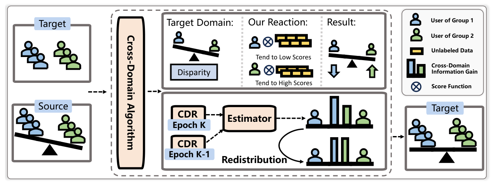

The Double-Edged Sword of Knowledge Transfer: Diagnosing and Curing Fairness Pathologies in Cross-Domain Recommendation (知识迁移的双刃剑：诊断与治愈跨域推荐中的公平性病理)
- 会议/期刊: WWW 2026
- 作者与机构: Yuhan Zhao, Weixin Chen, Li Chen (香港浸会大学), Weike Pan (深圳大学)
- 推荐链路定位: 精排（跨域知识迁移阶段）
- 研究方向: 跨域与多场景推荐 / 去偏公平与可信推荐
- 论文原文: https://arxiv.org/abs/2601.21805v1
- 开源代码: https://github.com/weixinchen98/CDFA
TL;DR (1分钟核心速览)
跨域推荐 (CDR) 在提升目标域精度的同时会放大群体级不公平，但既有工作只做“事后修补”而未回答“不公平从何而来”。本文用 Wasserstein-1 与 Rademacher 复杂度严格证明不公平源于两条路径：源域群体差异经表示迁移被继承，以及跨域信息增益在群体间分配不均。据此提出模型无关的 CDFA：用组感知难负采样均衡训练信号信息量，用信息论增益估计器重分配跨域收益。在 Tenrec QB/QK 上接入 5 种 CDR 骨干，UGF 最高相对下降 98.97%，精度平均反升 +10.53%。
Background & Motivation (背景与核心矛盾)
- 主流范式: CDR 通过共享表示 \(\phi\)与目标预测器\(f_t\) 将源域信号注入目标域；公平性侧则以 FairCDR（样本影响力重加权）、VUG（为无重叠用户生成虚拟源域用户）等事后干预为主。
- 前人局限: 其一，现有方法把 CDR 不公平当作单域不公平的简单放大，未区分“继承的偏差”与“新产生的偏差”，因而无法对症下药；其二，直接过滤源域不公平信息 \(\hat{\mathcal{D}}_s=\text{filter}(\mathcal{D}_s)\) 会进一步压缩本就稀缺的源域监督，且只保证源域公平、对目标域无约束。
- 核心洞察 (Key Insight): 作者用 Kantorovich–Rubinstein 对偶推出目标域 UGF 上界 \(\Gamma^{\text{UGF}}_t \le L_oL_f\big(W_1(\nu^0_s,\nu^1_s)+\delta^0_t+\delta^1_t+\delta^0_s+\delta^1_s+2\Delta_{ts}\big)\)，其中源域组间 Wasserstein 距离\(W_1(\nu^0_s,\nu^1_s)\) 直接抬高目标域公平性天花板；同时 Rademacher 复杂度分析表明组间样本量与函数类复杂度决定“增益差”的可观测偏差。图 1 的三组对照（target-only / CDR / 最小化源域差异的 CDR）实证了：CDR 确实恶化公平，修好源域差异能缓解但不能消除，说明第二条路径独立存在。
- 本文切入点: 不动源域数据、不改 CDR 骨干结构，只在训练信号层面“补信息”与“分收益”。
Method (核心方法设计)
1. 整体框架 (Overall Architecture)
CDFA 作为插件挂在任意 CDR 骨干（CMF/CLFM/BiTGCF/CoNet/DTCDR）之上，每个 epoch 执行两条并行支路：支路一读取上一轮各组平滑损失 \(\bar{\mathcal{L}}^{(K)}_g\)，算出用户级劣势度\(\alpha_u\)，据此调节负采样温度，为劣势组采更难负样本、优势组采更易负样本，从而在不删源域信息的前提下均衡组间训练信号信息量；支路二用 MLP 估计器拟合“跨域联合预测”与“单域预测”的对数比，得到每组的跨域信息增益\(\hat{\Delta I}^K_{st}\)，并以组间增益方差作为正则项回传，实现收益再分配。两路损失与骨干 BPR 损失联合优化，推理阶段不引入任何额外开销。
flowchart TD
A["源域/目标域交互 + 组标签"] --> B["组感知难负采样 (α_u → τ_u)"]
A --> C["跨域增益估计器 MLP"]
B --> D["骨干 CDR 损失 L"]
C --> E["增益重分配正则 ‖ΔĨ_g1 − ΔĨ_g2‖²"]
D --> F["联合优化 → 目标域打分"]
E --> F
2. 关键设计拆解 (Key Designs)
-
组感知自适应难负采样（均衡训练信号信息量）：痛点是不公平部分源于劣势组训练信号“信息量不足”，而过滤源域会雪上加霜。作者用动量平滑损失作为可微的性能代理 \(\bar{\mathcal{L}}^{(K)}_g=\beta\bar{\mathcal{L}}^{(K-1)}_g+(1-\beta)\mathcal{L}^{(K)}_g\)，定义相对劣势\(\alpha_u=(\bar{\mathcal{L}}^{(K)}_{g_u}-\bar{\mathcal{L}}^{(K)}_{\text{avg}})/\bar{\mathcal{L}}^{(K)}_{\text{avg}}\)，并令采样温度\(\tau_u=\exp(-\epsilon\alpha_u)\)代入 softmax 采样概率\(p(i|u)^{(K)}=\frac{\exp(\text{score}(\mathbf{u}_t,\mathbf{i}_t)/\tau_u)}{\sum_{j\in M}\exp(\text{score}(\mathbf{u}_t,\mathbf{j}_t)/\tau_u)}\)。\(\alpha_u\)越大温度越低、分布越尖，难负样本被选中概率越高——直觉上等于给劣势组“加练”，且增强幅度与公平差距成正比，天然自适应。候选集\(M\) 从全库随机抽样，既控开销又降低把用户真实偏好物品误当负样本的假阴性风险。
-
信息论跨域增益估计与重分配（均衡收益分配）：定义跨域增益 \(\Delta I_{st}=I(Y;\mathbf{X}_s,\mathbf{X}_t)-[I(Y;\mathbf{X}_s)+I(Y;\mathbf{X}_t)]\)，展开为期望对数比\(\mathbb{E}\big[\log\frac{p(y|\mathbf{x}_s,\mathbf{x}_t)}{p(y|\mathbf{x}_s)p(y|\mathbf{x}_t)}\big]+c\)。单域项用\(\sigma(\text{score}(\mathbf{u}_s,\mathbf{i}_t))\)、\(\sigma(\text{score}(\mathbf{u}_t,\mathbf{i}_t))\)直接估计，联合项\(p(y|\mathbf{x}_s,\mathbf{x}_t)=\sigma(\text{Estimator}(\mathbf{u}_t,\mathbf{u}_s)\cdot\mathbf{i}_t)\)由 MLP 建模。关键巧思在于联合项无直接监督：作者观察到第\(K-1\)轮更新后的目标域表示\(\mathbf{u}^K_t\)已内蕴跨域增益，于是用\(\min_{\Theta_{\text{Estimator}}}\|\text{Estimator}(\mathbf{u}^{K-1}_t,\mathbf{u}^{K-1}_s)-\mathbf{u}^K_t\|^2\)自监督拟合，把“一轮跨域更新带来的表示位移”当作增益的物理载体。最终以\(\|\Delta\tilde{I}^{g_1}_{st}-\Delta\tilde{I}^{g_2}_{st}\|^2\) 压缩组间增益差。
-
训练目标与推理效率：总损失为 \(\min_{\Theta\backslash\Theta_{\text{Estimator}}}\mathcal{L}+\gamma\|\Delta\tilde{I}^{g_1}_{st}-\Delta\tilde{I}^{g_2}_{st}\|^2\)，估计器参数由上式单独交替更新；负采样为组自适应重要性采样（非均匀、非 in-batch），无需额外难负样本挖掘器。两模块仅增加常数级开销，整体复杂度与常规 CDR 框架同阶，推理期零额外成本。
Experimental Setup & Evaluation Protocol (实验设置与评估协议)
- 数据集与预处理: 两个腾讯真实跨域数据集，均为 Video↔Article 双域，敏感属性取 gender 与 age 两组划分。
| 数据集 | 域对 | 敏感属性 | 场景说明 |
|---|---|---|---|
| Tenrec QB | Video / Article | gender, age | QQ Browser 平台交互 |
| Tenrec QK | Video / Article | gender, age | QQ Kan 平台交互 |
- 数据划分与防穿越 (Splitting Strategy): 基于 RecBole-CDR 框架的标准跨域划分，目标域为主评测域，源域仅作辅助信号；详细统计与实现见原文附录 C。
- 排名评测协议 (Ranking Protocol): 采用
Full-Ranking全库未交互物品排序，报告 Recall@{10,20} 与 NDCG@{10,20}；公平性用 UGF@K（组间指标期望差的上确界，越小越公平）。 - 对比基线与超参设置: 精度骨干为 CMF、CLFM、BiTGCF、CoNet、DTCDR 五类；公平性对手为 FairCDR 与 VUG。所有提升经双侧 \(t\)-test 检验，\(p<0.05\) 显著。
Key Experimental Results (实验关键数据)
1. 主实验对比 (Main Results)
下表摘取 QB-gender 与 QK-gender 两个代表性设定（完整四设定见原文表 1），UGF 取四个指标均值口径的改善幅度：
| 骨干 | 设定 | Recall@10 (w/o → w/) | NDCG@20 (w/o → w/) | Acc. Impr. | Fair. Impr. |
|---|---|---|---|---|---|
| CMF | QB-gender | 0.2461 → 0.2715 | 0.1571 → 0.1771 | +11.66% | +97.76% |
| CLFM | QB-gender | 0.2049 → 0.2825 | 0.1281 → 0.1817 | +40.09% | +95.71% |
| BiTGCF | QB-gender | 0.2677 → 0.2754 | 0.1748 → 0.1779 | +2.20% | +68.75% |
| CoNet | QB-gender | 0.2266 → 0.2381 | 0.1468 → 0.1551 | +5.48% | +98.97% |
| DTCDR | QB-gender | 0.2138 → 0.2324 | 0.1347 → 0.1498 | +10.53% | +62.00% |
| CMF | QK-gender | 0.0210 → 0.0260 | 0.0151 → 0.0180 | +20.82% | +73.67% |
| CLFM | QK-gender | 0.0132 → 0.0277 | 0.0093 → 0.0191 | +106.69% | +40.02% |
| CoNet | QK-gender | 0.0129 → 0.0128 | 0.0092 → 0.0088 | −3.04% | +8.21% |
与 FairCDR、VUG 的对比（图 3）显示 CDFA 在精度与公平两个维度同时占优，且未出现精度回退。
2. 消融实验 (Ablation Study)
CMF + QB-gender 设定：
| 变体 | Recall@10 | NDCG@10 | UGF@10 | UGF@20 |
|---|---|---|---|---|
| w/o \(\alpha_u\)（去掉劣势度调节） | 0.2727 | 0.1414 | 0.0044 | 0.0020 |
| w/o FS（退化为随机负采样） | 0.2571 | 0.1322 | 0.0393 | 0.0458 |
| w/o \(\mathcal{L}_{redist}\) | 0.2526 | 0.1308 | 0.0471 | 0.0541 |
| w/o \(\mathcal{L}_{est}\) | 0.2729 | 0.1414 | 0.0035 | 0.0024 |
| CDFA 完整 | 0.2715 | 0.1411 | 0.0008 | 0.0006 |
3. 关键实验发现 (Key Findings)
- 公平性提升幅度与骨干的“原始偏差”强相关：CoNet 在 QB-gender 上原始 UGF@10 高达 0.0513，CDFA 将其压到 0.0005（+98.97%）；而 BiTGCF 原本偏差就小（0.0364），改善幅度仅 +68.75%。说明 CDFA 是“按需补偿”，偏差越大收益越显著。
- 两条病理路径缺一不可：去掉 \(\mathcal{L}_{redist}\)后 UGF@20 从 0.0006 反弹至 0.0541（恶化近 90 倍），去掉组感知采样后反弹至 0.0458，二者均远大于去掉\(\alpha_u\)或\(\mathcal{L}_{est}\) 的影响，定量印证“差异迁移”与“增益不均”是两个独立且都必须处理的主因。
- 公平与精度并非零和：多数设定精度同步上升（CLFM 在 QK-gender 上 Recall@10 提升 +106.69%），最差情形仅 −3.04%（CoNet/QK-gender）；超参分析显示 \(\gamma\)是唯一呈现明显权衡的超参，\(|M|\)主要扰动精度而公平性稳定，\(\epsilon\) 在合理区间内鲁棒。
Highlights & Limitations (亮点、对比与审稿批判)
- 与代表作对比 (vs. Prior Work): FairCDR 通过样本影响力重加权做数据层纠偏，VUG 通过虚拟源域用户补足无重叠用户，二者均属“事后对症”；本文首次给出 UGF 的 Wasserstein 上界与增益收敛界，把不公平拆成可分别干预的两项，且干预手段（负采样 + 增益正则）不触碰骨干结构，因而能同时挂载 5 种异构 CDR 模型。
- 可迁移亮点: 其一，“用上一轮表示位移作为无监督增益监督信号”的自监督构造，可迁移到任何需要估计“某模块带来多少增量信息”的场景；其二，用动量平滑损失作为可微公平代理、再映射为采样温度的做法，可直接复用到单域去偏与冷启动扶持。
- 审稿级局限批判: 其一，增益估计器依赖重叠用户，非重叠用户占主导时 \(\hat{\Delta I}\) 的可靠性存疑，论文未给出重叠率的敏感性分析；其二，实验仅在腾讯两个同构（Video/Article）域对上验证，缺乏跨类型域（如电商→短视频）与多组（>2 组）公平性的扩展实验，UGF 的多组求和扩展仅有定义层面的说明。
Rating (四维评分)
- 方法创新性 (Novelty): ⭐⭐⭐⭐ （首次用 Wasserstein 上界 + Rademacher 界把 CDR 不公平拆成迁移项与增益项，理论诊断扎实，但干预算子本身较常规）
- 评估协议与实验扎实度 (Protocol & Experiments): ⭐⭐⭐⭐ （5 骨干 × 2 数据集 × 2 敏感属性 + 公平性 SOTA 对比 + 完整消融与超参分析，\(p<0.05\) 检验到位；缺多组与跨类型域验证）
- 写作与数学规范度 (Clarity & Rigor): ⭐⭐⭐⭐ （定理—实证—方法三段闭环清晰，公式推导完整；部分符号在正文与附录间复用略密）
- 工业落地与复现价值 (Industrial & Practical Value): ⭐⭐⭐⭐⭐ （模型无关插件、推理零开销、代码已开源，可直接挂载现有 CDR 生产链路）